GitHub的Hello World
〈GitHub：文字工作者的社交平台〉第一回
基本上有在寫程式的人多多少少都有聽過GitHub的大名吧？GitHub是一個線上、可免費使用的平台，它提供了「Git分散式版本控制」的功能。所以當你將自己的作品，比如說軟體工作者寫的可公開的程式碼，或是作家正在構思的小說，或是編劇所編輯的劇本……等等，把它上傳到GitHub之後，它不僅可以幫你將這些資料另外保存，不用擔心在資料只存在自己電腦的情況下，萬一電腦壞掉所有的資料通通都不見的問題，它還可以在每次作品進行編輯並儲存之後，標明出當前的版本與修改前的差異處。
強大的GitHub
我們直接來看一個例子就可以知道GitHub強大的地方：
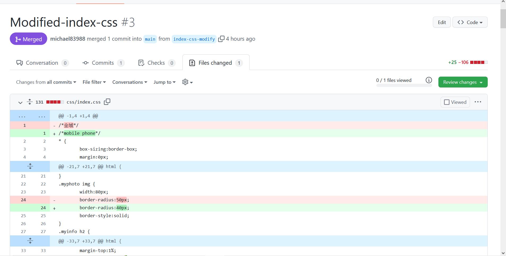
我將架設「MY學習筆記」這個網站的各個資源放在GitHub平台上，做為資料儲存與進行版本控制的地方。截圖的畫面代表的是index.css這個檔案經過某一次的修改之後該次編輯與編輯前的差異。首先最上面「Modified-index-css」表示針對這次的修改我所取的名稱，會盡可能的說明這次編輯的目的：這次的修改是針對index.css這個檔案進行的。後面的「#3」表示整個專案的第3次更動。再來看到畫面下半部有藍色、紅色、綠色底標示的各行程式碼。藍色部分表示跟上一版相比沒有差異，並且平台自動的把它們給收合起來；紅色部分表示「刪除」，而綠色部分表示「新增」。以清晰的方式呈現每次編輯前後的差異，這樣子當進行重大的修改後或是某天自己覺得目前的版本不是想要的，就能夠很快速的恢復到修改前的樣子！這正是GitHub強大的地方，而且更棒的是即使不會寫程式也可以享受這個強大的功能！(這個功能是透過Git版本管理工具來實作，但要使用的話就得寫程式了⊙﹏⊙∥)。
開始使用GitHub：首先建立一個repository
先用一張圖來說明GitHub使用大致的流程：
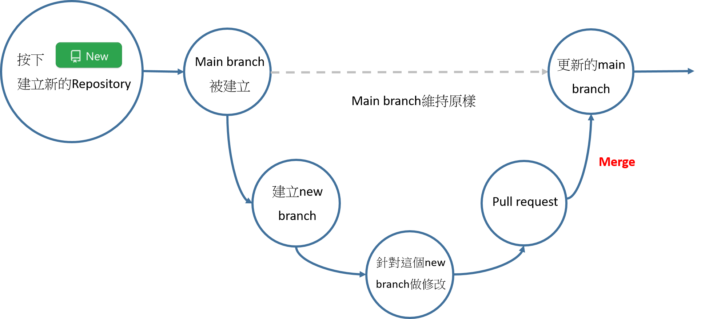
要使用GitHub首先得有一個GitHub的帳戶，免費註冊，只要到它的官網然後按下右上角的Sign up，跟著提示一步步完成即可。有了帳戶之後，首先要建立一個repository來當作存放你的資料的地方。先切換到Repositories的頁面，然後按下右邊「New」的按鈕：
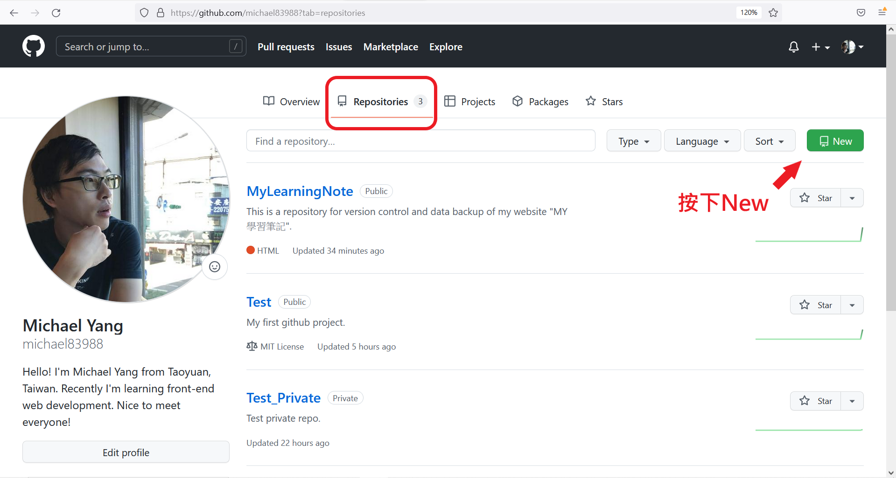
接著是填寫與選擇各個項目：
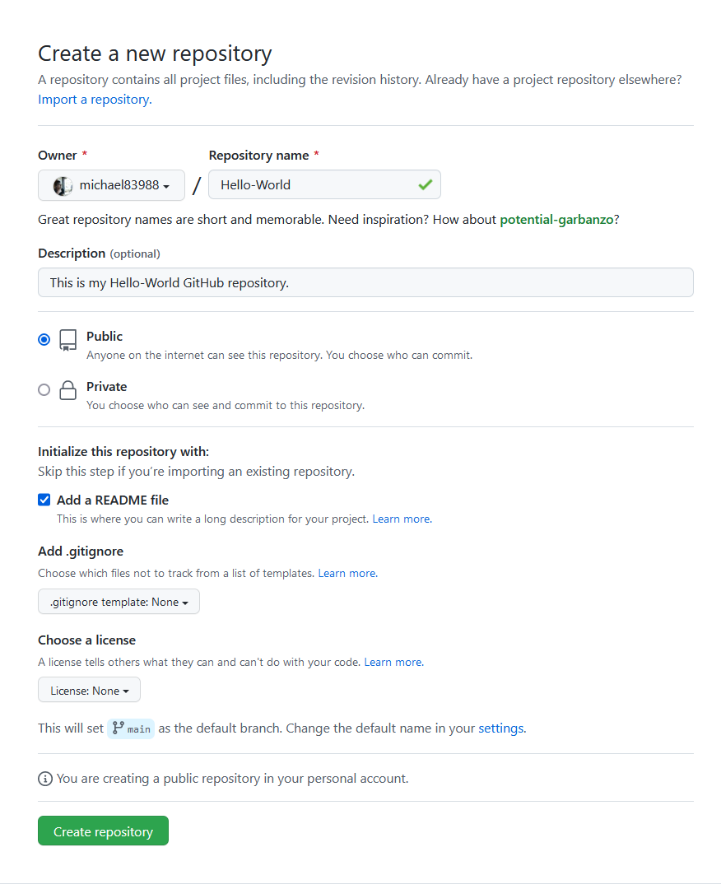
- Repository name：給這個repository取個名字。
- Description：描述關於此repository的資訊；可以省略但盡量不要。
- 選擇Public或是Private：
- Public: 這個repository大家都看得到。可設定誰擁有修改的權利。
- Private: 只有特定的帳號可以看到這個repository的內容。
- Add a README file: 可在README.md檔案裡更詳細的說明這個repository的相關資訊；可不勾選。
- Add .gitignore: 可以在這個檔案裡面設定哪些檔案不需要版本控制的功能；即被選擇的檔案沒辦法看出修改前/後之間的差別。
- Choose a license: 雖然大家可以看到你的repository內容，但是除非有選定一個license，不然大家是不可以複製、分享、修改你的repository內容的。
通通設定好之後，按下最下面的Create repository就完成啦！完成之後的樣子：
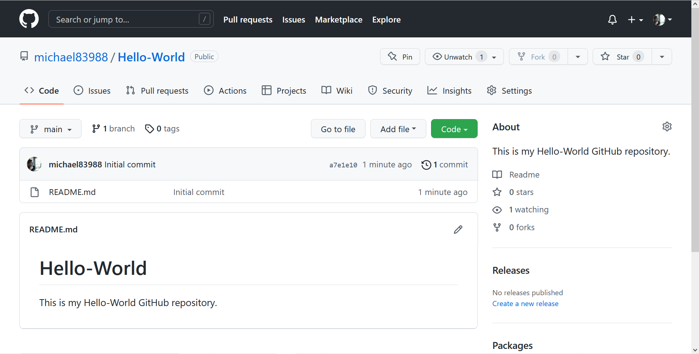
可以看到在畫面的左邊，有一個下拉式選單，上面標示著main的branch。它代表的是這個repository想要呈現的樣子，所以任何的改動應該要先另外開一個新的branch，在這個new branch中修改完並且確定是自己想要的結果後，再把它合併到main branch中。
建立一個new branch
點擊寫著main的下拉式選單，在輸入框中打上新的branch的名稱(取名盡量與這次修改的目的有關，方便之後的管理)。在本範例中我們打上modify-README，然後按下Create branch: modify-README from ‘main’，詳見附圖：
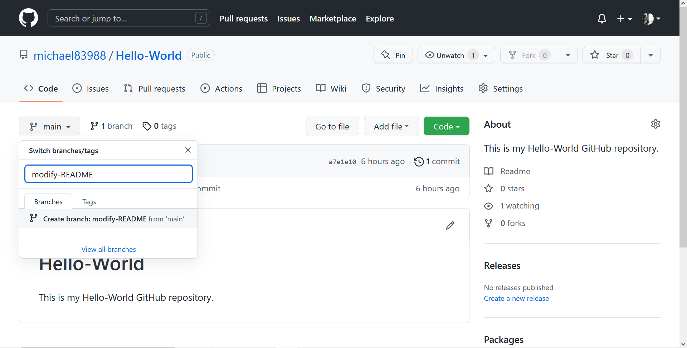
按下Create之後，畫面會切換到modify-README的branch中。這個時候我們來針對README.md檔案做一些修改：我在README.md中加入一段話：To test "new branch" function, I create a new branch and modify the README file. 寫完之後到畫面最下方按下Commit changes，就可以將這次的編輯結果儲存到modify-README的branch中(每一次的Commit changes可以輸入此次編輯的說明，這裡我就用預設的Update README.md)。按下Commit changes之後的畫面：
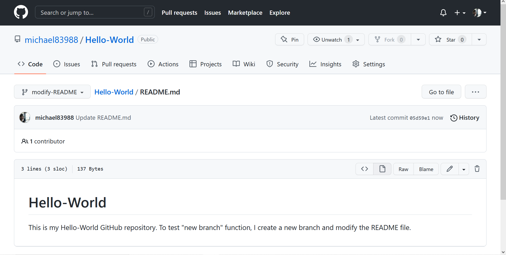
可以看到README.md中多出了剛剛打的字囉(*￣3￣)╭
當我們確定這個branch的改版是我們想要的時候，就可以將它跟main branch的版本做結合。這個時候就需要使用Pull request的功能了！
使用Pull request
首先將branch切換回main看看：
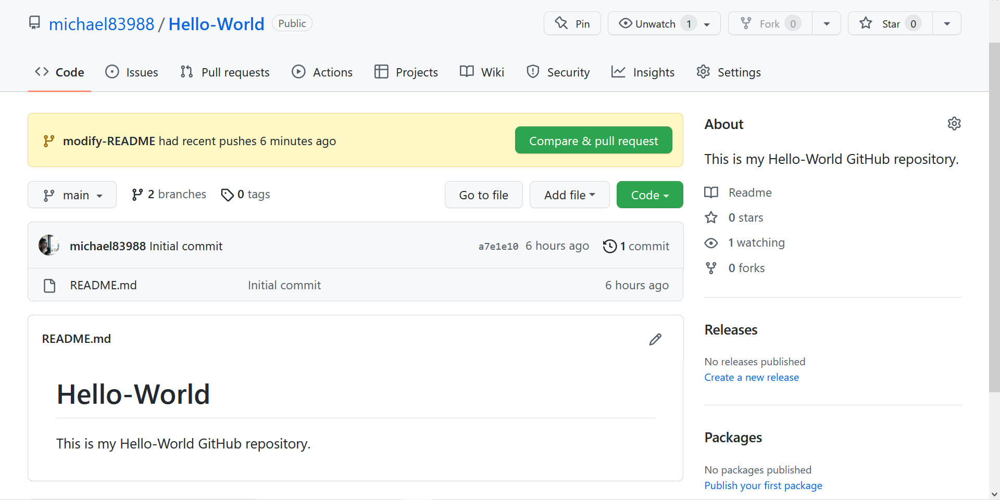
畫面中出現了一個黃色底的通知，告訴我們剛剛modify-README這個branch在幾分鐘之前有更新。現在我們就按下Compare & pull request。畫面長這樣：
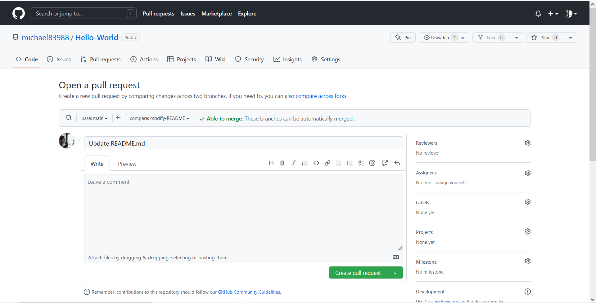
它會自動的與main branch中的內容作比較，若比較結果是沒問題的，會出現圖中一個綠色的勾勾，旁邊寫著Able to merge的綠色字(若是比較之後有衝突，它會出現一個可供修改的畫面，這個就等其他篇再來討論囉！)。我們也可以針對這個pull request寫一些說明，這邊就直接使用預設的Update README.md了。都寫好之後按下Create pull request。之後來到這個畫面：
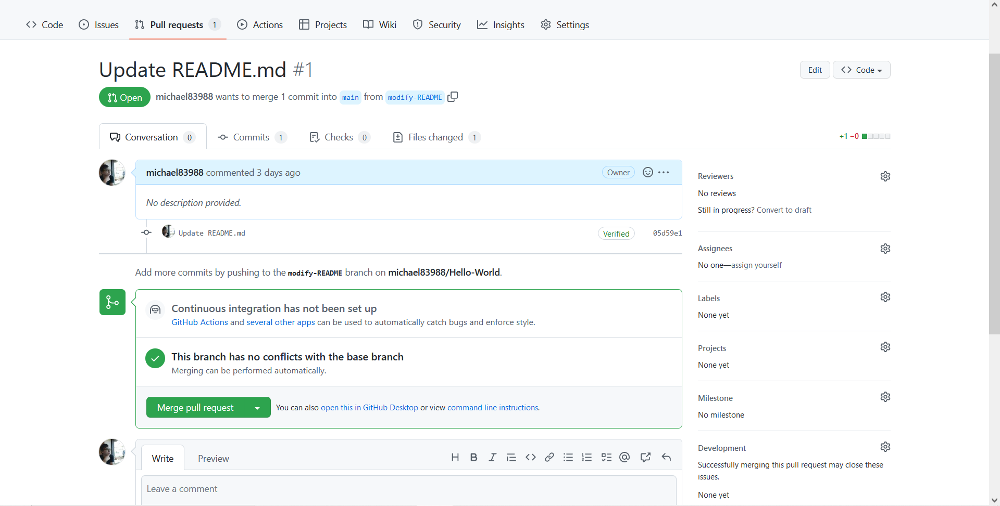
在畫面的下方有一個綠色勾勾，旁邊寫著This branch has no conflicts with the base branch。表示說這個pull request可以跟base branch (main branch)做結合。讓我們按下Merge pull request。這個時候會出現一個輸入框框，能夠寫跟這次的merge相關的資訊。我們繼續使用預設值。
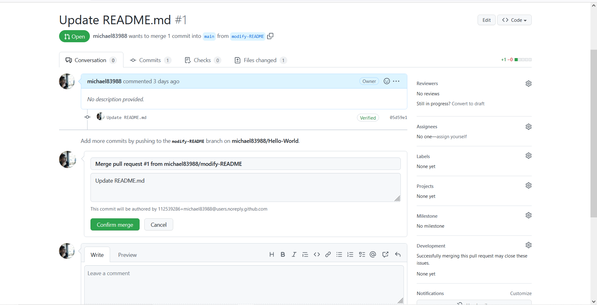
按下Confirm merge，畫面變成：
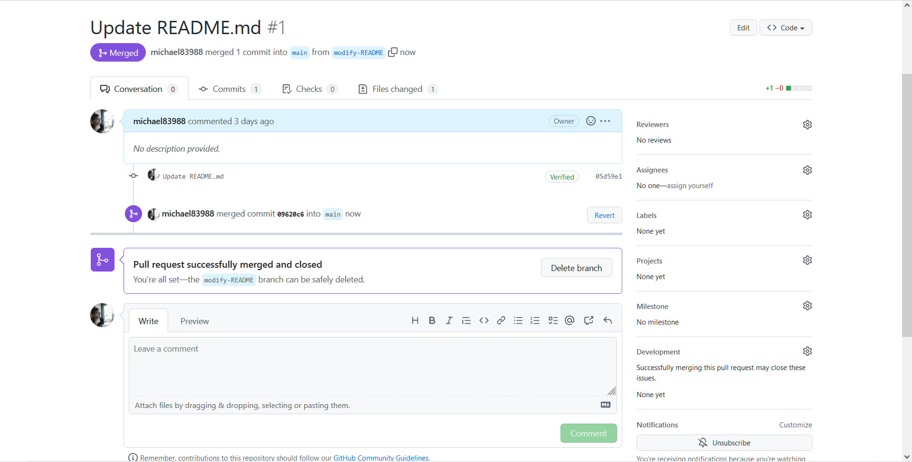
這個時候我們再次的按下這個專案的名稱Hello-World，可以看到在main branch中README.md已經修改成之前在modify-README branch的樣子囉！
小結
這一單元大致介紹了GitHub強大的地方還有該怎麼使用GitHub來管理自己的專案。剛開始接觸GitHub的時候其實真的會被它這麼多的功能給搞的很不知所措。不過只要了解它的運作方式就能夠給自己很大的方便啦！

國立交通大學材料系奈米科技碩士班畢業(現在應該稱國立陽明交通大學ʕ •ᴥ•ʔ)。雖然非資工相關科系畢業，但本著對資工領域的興趣而開始自學相關知識，目前則專攻網頁相關知識，如HTML5、CSS3、JavaScript、Node.js。以跨領域學習者的角度來介紹資工領域相關的知識，除了加深自己對相關知識的理解，也期望同是跨領域學習的朋友們因為瀏覽我的文章而有更多不一樣的觀點可以參考。